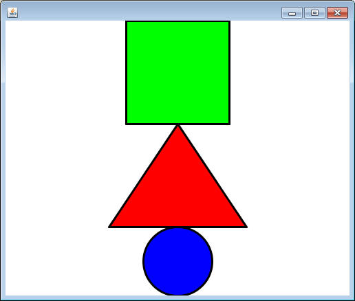
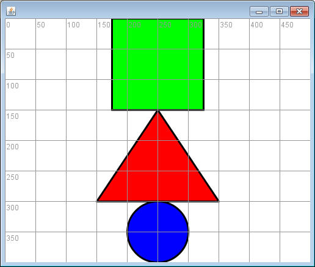
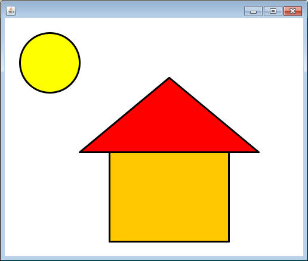
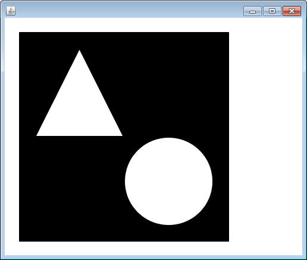
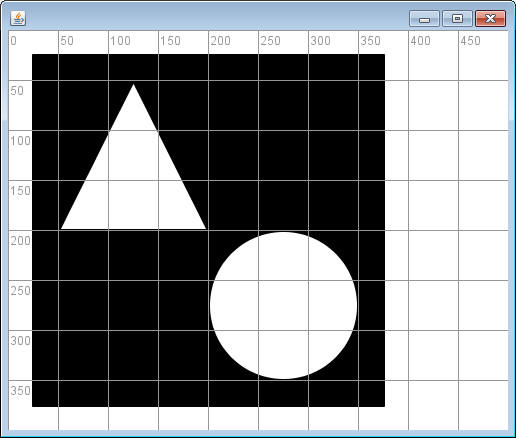

Using the ShapeOrganizer Object
First, make sure that you've properly set up BlueJ with sacco.jar. Otherwise you will not be able to use a ShapeOrganizer object.
Now, copy the following program into your project:
import sacco.*;
public class ShapeOrganizerDemo
{
public static void main()
{
ShapeOrganizer shapeOrg = new ShapeOrganizer();
shapeOrg.showCircle();
shapeOrg.setCircleX(0);
shapeOrg.setCircleY(0);
shapeOrg.setCircleRadius(200);
shapeOrg.setCircleColor("pink");
}
}
|
Notice that the first line says import sacco.*;. This import statement is necessary to retrieve ShapeOrganizer from sacco.jar .
You are not expected to memorize the ShapeOrganizer methods. Use the ShapeOrganizer API to determine what methods exist and what parameters are needed when you call them.
WARNING: Computer coordinates are a little different than math. The location (0,0) is at the upper-left corner and as the y increases, it moves down the screen.
Assignment:
Create each of the designs below in a different program. I have provided a
view both with and without the showGrid() method being called. For
simplicity, every coordinate and measurement is a multiple of 25.
1) Balance:


2) HomeSweetHome:

3) BlackAndWhite:

